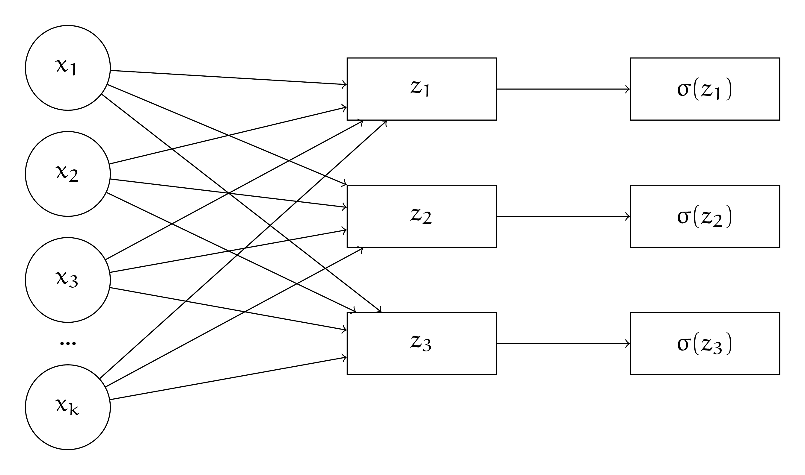
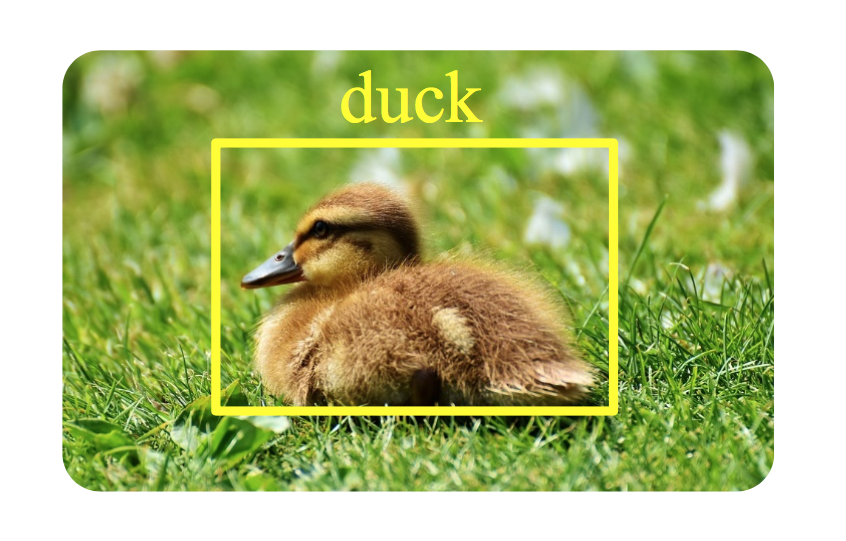

3. Разные выходы нейросети и правдоподобие
3. Разные выходы нейросети и правдоподобие#
Та, в чьих руках находится лёрнинг, решила немного поэкспериментировать с выходами из своей сетки.
а) Маша решила, что хочет решать задачу классификации на два класса и получать на выходе вероятность принадлежности к первому. Что ей надо сделать с последним слоем сетки?
Решение
Последний слой сетки состоит из одного нейрона. Мы к нему применяем сигмоиду и получем на выходе вероятность того, что объект относится к первому классу.
Если мы хотим получить вероятность того, что объект относится к нулевому классу, вычитаем выход нейросетки из единицы.
б) Маша хочет решать задачу классификации на \(K\) классов. Что ей делать с последним слоем?
Решение
Нужно сделать из нейросетки \(K\) выходов и применить к ним softmax. Подробнее можно посмотреть в пункте в) предыдущей задачи.
в) Маша хочет спрогнозировать рейтинг фильма на “Кинопоиске”. Он измеряется по шкале от \(0\) до \(10\) и принимает любое непрерывное значение. Как Маша может приспособить для этого свою нейронку?
Решение
Маше на выходе надо получать одно число, поэтому последний слой будет состоять из одного нейрона. Нам нужно применить к этому нейрону функцию активации, которая размажет значение из множества непрерывных числе на отрезок от \(0\) до \(10\).
Например, мы можем взять сигмоиду и умножить её на \(10\). Тогда у нас получится требуемое отображение. Минусом такого подхода может быть то, что сигмоида слишком резко делает перегиб от \(0\) до \(10\) и сетка будет пытаться разделить фильмы на два противоборствующих лагеря.
При этом, скорее всего, у большинства фильмов будет стоять оценка в районе \(6-10\). Если сигмоида сработает плохо, надо будет придумать какую-то другую функцию активации, учитывающую эту особенность данных.
г) У Маши есть куча новостей. Каждая новость может быть спортивной, политической или экономической. Иногда новость может относится сразу к нескольким категориям. Как Маше собрать нейросетку для решения этой задачи? Как будет выглядеть функция ошибки?
Решение
Такая задача называется мультиклассификацией. Можно обучить для каждого класса свою нейросеть, а дальше предсказывать по-отдельности для каждой статьи, является ли она спортивной/политической/экономической.
Скорее всего, нейросеть будет выделять на первых слоях одинаковые факторы, поэтому это не очень эффективно. Обычно для работы с текстами обучают большую нейросеть, которая учится вычлинять из них смысл. Её веса фиксируют, срезают последние слои, так чтобы сетка выплёвывала вектор из чисел. Его называют векторным представлением или эмбедингом.
Дальше этот вектор посылают в простые модели, которые доучивают под конкретные задачи. Большую сетку называют тушкой, а маленькие головами. Есть много разных способов обучать тушки. Мы про них немного поговорим в листочках про эмбединги. Для картинок поступают аналогичным образом.
Если у нас нет тушки и нам надо с нуля обучать архитектуру для решения мультиклассифкации с нуля, мы можем специфицировать её следующим образом
{kind=link}
Сетка выплёвывает три выхода, к каждому мы применяем сигмоиду. Это вероятности того, что текст относится к рассматриваемым классам. Для каждого выхода мы подбираем свой порог для принятия решения. Нейросеть мы будем обучать на функцию потерь, которая будет представлять из себя сумму из нескольких логистических потерь
Для каждого выхода мы считаем свои потери, а затем складываем их с коэффициентами \(\lambda_i.\) С их помощью можно давать нейросетке понять, какая из ошибок для нас критичнее.
д) У Маши есть картинки с уточками и чайками. Маша хочет научить нейросеть искать на картинке птицу, обводить её в прямоугольник (bounding box), а затем классифицировать то, что попало в прямоугольник.
{kind=link}
Как можно специфицировать выход из такой нейросети? Как должна выглядеть функция потерь?
Решение
Нам надо предсказывать, где именно будет находиться рамочка и что находится в рамочке.
Специфицировать предсказание рамочки можно кучей разных способов. Один из них – пердсказыввать на выходе из нейросетки четыре числа: координаты одного из углов, ширино и высоту рамки. Штрафовать за неправильные предсказания этих параметров можно с помощью \(MSE\). Чем дальше рамка оказалась от уточки, тем жёстче должен быть штраф.
Когда мы обвели объект в рамочку, нам надо его классифицировать. Для этого можно использовать logloss. Все потери будем складывать с разными весами.
Такой подход довольно наивен, о более современных подходах можно узнать из курсов по компьютерному зрению.
е) Маша хочет обучить нейросеть предсказывать количество лайков под фотографиями в инстаграме. Количество лайков – это целое число. Хочется, чтобы нейронка всегда прогнозировала целые числа. Как можно специфицировать её? Надо ли менять функцию потерь? На какую?
Решение
Первая идея, которая тут возникает – пытаться округлять выход нейросети и учить её на MSE или MAE. Дальше можно анализировать ошибки нейросетки и пытаться модернизировать функцию потерь, чтобы пробем стало меньше. Это подход настоящего инженера.
К машинному обучению есть и другой подход, вероятностный. Если у нас есть какая-то информация о том, как распределены данные, мы можем выписать вероятностную модель, а дальше получить функцию потерь из правдоподобия.
Например, в случае линейной регрессии, мы можем предположить, что \(y \mid x \sim N(\langle x, w \rangle, \sigma^2).\) Максимизация правдоподобия такой модель эквивалентна минимизации MSE. По аналогии из метода максимального правдоподобия можно вывести logloss. Подробнее об этом можно почитать в блоге Александра Дьяконова.
В нашей задаче можно поступить аналогично. Лайки – это случайная величина счётчик. Обычно такие случайные величины имеют распределение похожее на Пуасоновское. Фотографию смотрит огромное количество людей. Лайки ставят только единицы. Получается, что мы имеем дело со схемой Бернулли, где вероятность успеха очень маленькая. В такой ситации как раз и рождается распределение Пуассона.
Специфицируем модель следующим образом. Лайки под фотку ставятся с какой-то интенсивностью \(\lambda\), зависящей от характеристик фотки \(x_i\). Например, может быть, что \(\lambda = \lambda(x_i) = \langle w, x_i \rangle.\) Такая модель называется \emph{пуассоновской регрессией.}
В качестве \(\lambda(x_i)\) можно также взять нейросеть или градиентный бустинг. Например, в библиотеке для градиентного бустинга catboost есть возможность использовать пуассоновскую регрессию с градиентным бустингом над деревьями.
Найдём функцию потерь. Для распределения Пуассона
Выписываем функцию правдоподобия
Прологарифмируем
Откидываем все константные слагаемые, домножаем на \(-1\) и получаем функцию потерь для минимизации
Прогноз модели можно искать как \(\arg \max_{k \in Y} \mathbb{P}(y = k).\) Случайная величина, распределённая по Пуассону может принимать бесконечное число значений. Надо делать такой перебор по разумным значениям \(y.\)
Эту логику можно продолжить на байесовские методы. Неожиданно окажется, что регуляризация рождается из априорных распределений. Но это уже совсем другая история, почитать о которой можно тут.